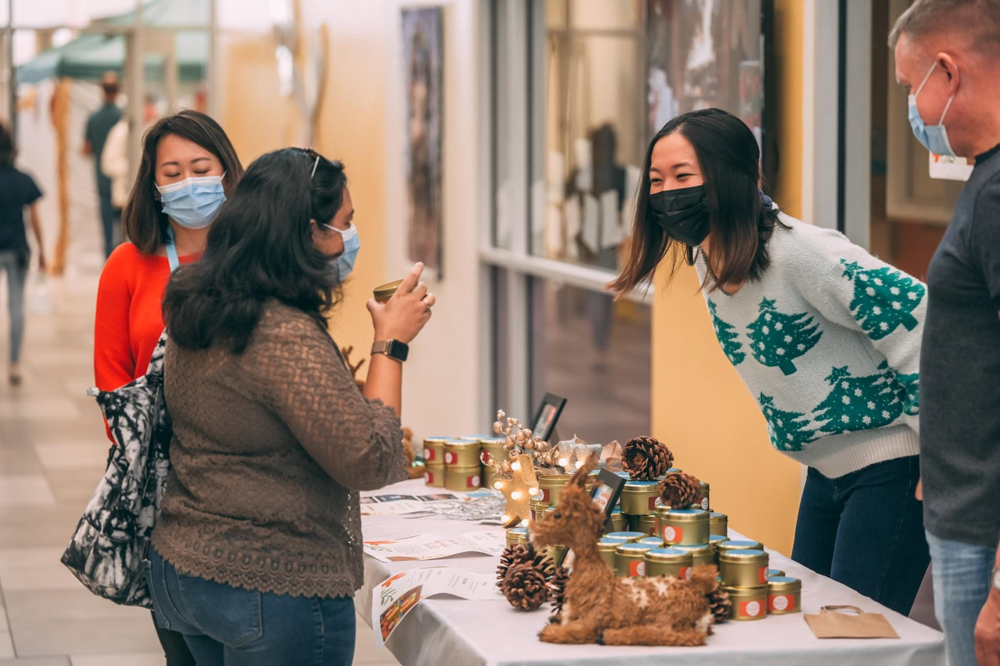
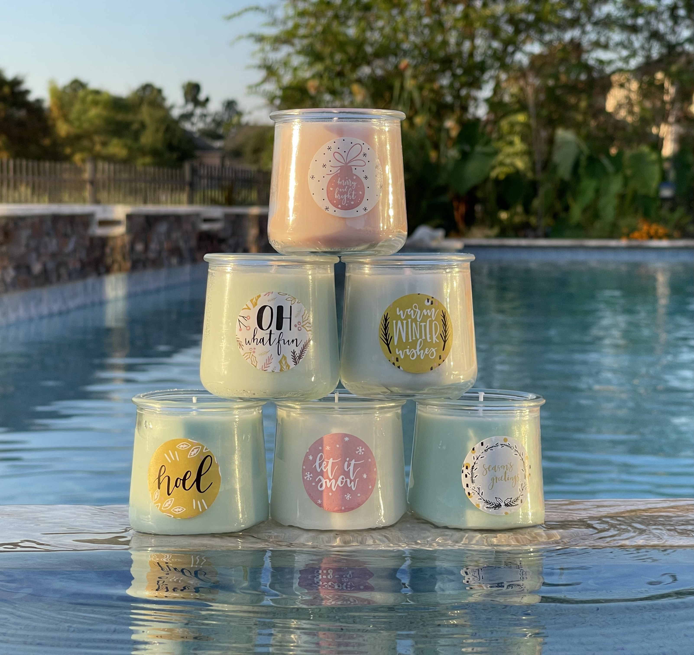
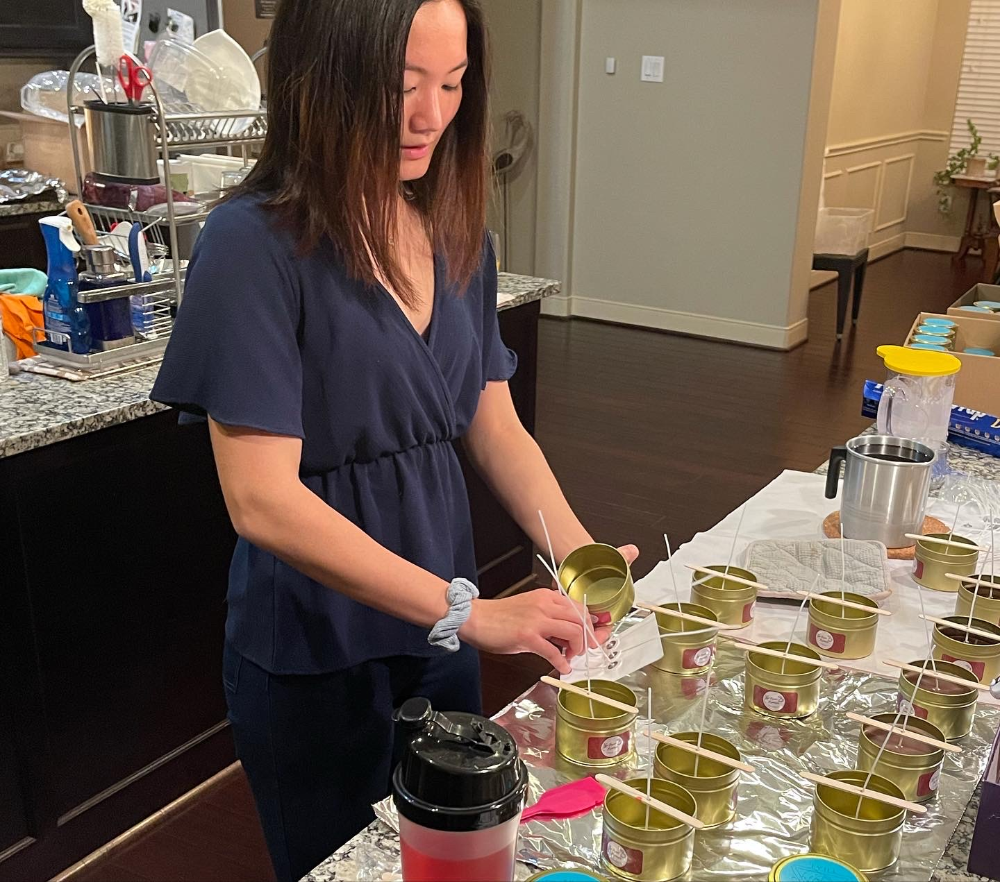
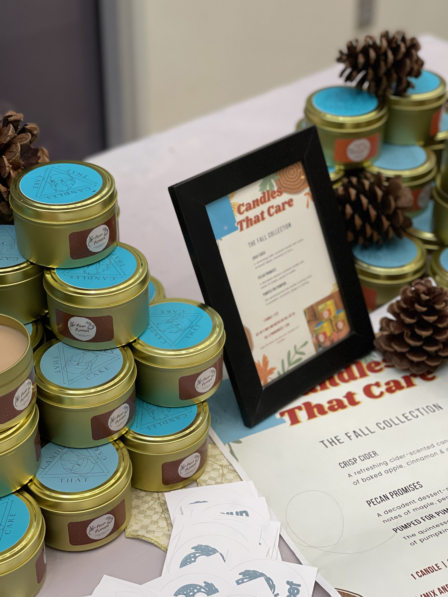

Candles that Care
How a small venture to learn how to make homemade candles
became a mission to change lives for the better.

It all started with a sniff. I noticed the fresh, fruity fragrance of a burning candle in my living room and wondered how candles were made and how the wicks stayed upright during pouring. Within three days, I had candle-making supplies shipped from Amazon, eager to find the answers myself. I envisioned making candles to sell or give as gifts for the upcoming holidays, and that’s how Project Light Up My Life under my brand name, Candles that Care, was born.


To promote my brand, I collaborated with my school's media manager and secured a table at the Winter Fair. Soon, I was delivering candles to students across the grade. In three months, I exceeded my initial goal of $800, reaching over $1,500 in sales, which I fully donated to UNICEF's campaign to provide hand soaps, masks, and COVID-19 vaccine doses to children in third-world countries.

Despite having to put Candles that Care aside due to high school commitments, the experience taught me valuable lessons in managing capital and profits, and developing leadership skills. Most importantly, knowing I could light up the lives of those who supported me and those across the globe left a lasting impact on my heart.